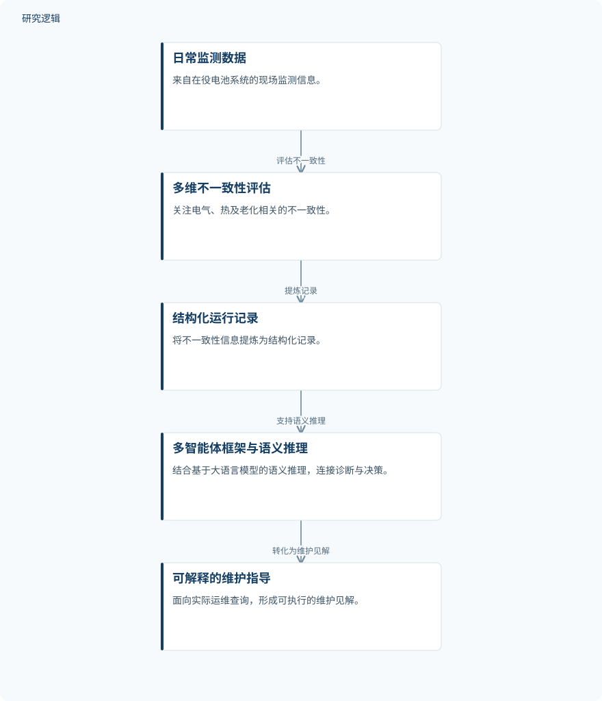

摘要解读
面向可解释电池系统维护的多智能体人工智能框架
A multi-agent AI framework for explainable battery system maintenance
解读更新 2026-11-10 18:05 · 依据公开摘要整理，未核验全文细节
储能电池的日常监测能够暴露电芯差异，但这些信号如何转化为可解释、可执行的维护建议？这项研究把多维不一致性评估与大语言模型语义推理结合，探索从定量诊断走向运维决策的路径。
文章目录
电芯差异为何没有直接变成维护行动
电池储能系统（BESS）对电力系统稳定性日益重要，但其运维仍主要依赖被动响应和专家诊断。摘要指出，电芯之间的不一致性能够提供退化与安全风险的早期预警，问题在于缺少可扩展、可解释的决策支持框架，使这些信号难以有效转化为实际行动。
将不一致性评估接入多智能体语义推理
研究提出以不一致性为驱动的运维范式，将日常监测数据转化为面向决策的解释性指导。框架结合多维不一致性评估和基于大语言模型的语义推理，试图连接定量诊断结果与实际维护决策。
具体而言，作者利用在役电池系统的现场数据，将电气、热以及老化相关的不一致性提炼为结构化运行记录，再通过多智能体框架转化为可执行的维护见解。摘要没有进一步说明各智能体的角色分工、协作机制或模型配置。
从监测数据到维护建议的摘要示意


依据摘要整理研究环节，仅表示明确描述的信息转化关系，不代表论文原图或具体软件架构。
下载 SVG图示关系说明
实线表示相邻阶段的信息流，虚线表示跨阶段联系或反馈。
日常监测数据 → 多维不一致性评估：评估不一致性；多维不一致性评估 → 结构化运行记录：提炼记录；结构化运行记录 → 多智能体框架与语义推理：支持语义推理；多智能体框架与语义推理 → 可解释的维护指导：转化为维护见解
现场数据展示运维问答与效率收益
研究使用了一个包含3,564个电芯的在役电池系统所积累的八个月现场数据。摘要报告，该方法能够对真实运维问题提供准确且可解释的回答；相较传统专家驱动的做法，响应时间与运营成本均降低超过80%。
这一结果直接涉及运维查询响应及其时间、成本表现。作者进一步指出，该路径对储能系统的可靠性、安全性和经济性具有意义；但不应据此将这些应用意义写成已经量化验证的事故减少、寿命延长或可靠性提升。
效率结果仍需结合评价口径理解
仅凭摘要，尚无法判断电池类型、工况覆盖、查询样本规模，以及数据划分和独立验证范围。3,564个电芯属于所述在役系统，不能直接视为同等数量的独立验证样本，也不能据此推定跨站点适用性。
摘要也未交代准确性与可解释性的评价标准、专家对照流程，以及响应时间和运营成本的统计口径。这些是进一步阅读时需要核对的信息，而不是认定论文未开展相关比较或验证。
阅读启发：关注诊断证据如何支撑建议
阅读启发：本文值得关注的不只是能否回答运维问题，还包括回答如何关联电气、热和老化方面的诊断证据。进一步阅读可重点核对结构化记录如何保留原始信息、维护建议如何得到解释，以及效率收益对应哪些任务边界，避免把问答效率等同于现场维护成效。
以上为本站阅读启发与建议，不是论文已验证的结论。